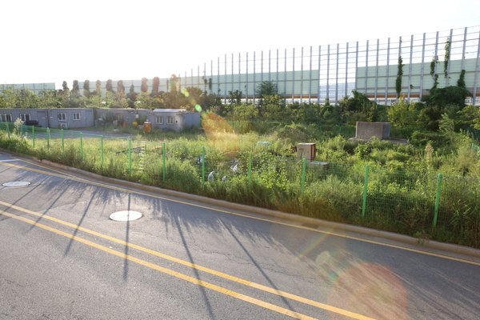
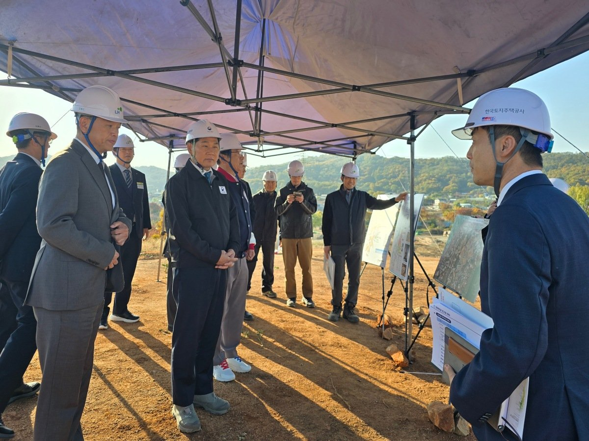
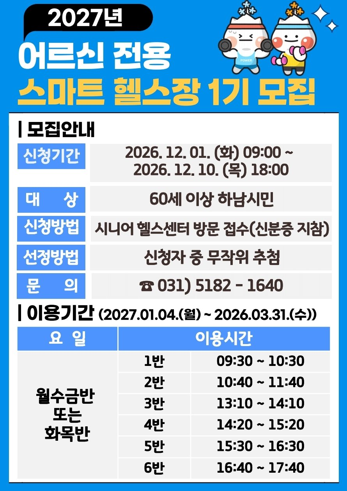
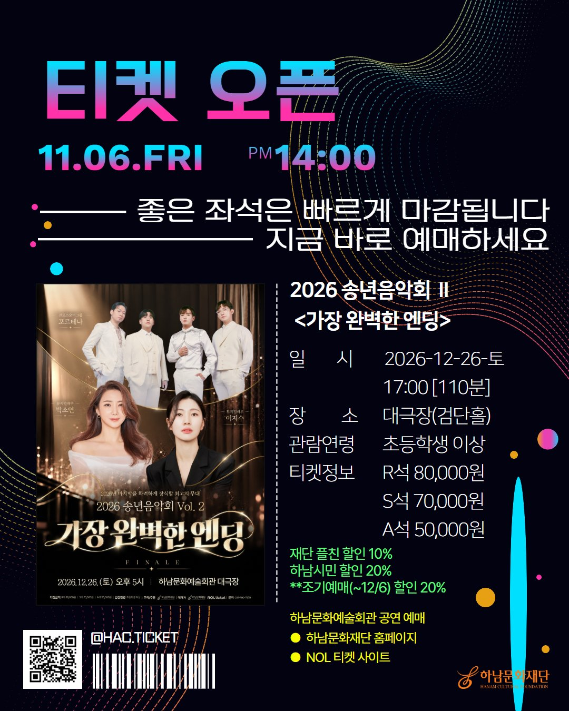

74호 | 2026년 11월 6일 발행
📌 이번 호 주요 목차
 우리동네 국회의원 이광재
우리동네 국회의원 이광재
📋 공약이행
이광재의원 "감일파출소 신설, 약속을 지켰습니다"… 치안초소 대신 정식 파출소 확정
• 지난 6월 1일 새벽 감일 골목에서 "파출소를 만들어 달라"는 주민 요청에 "당선되면 반드시 추진" 약속
• 하남경찰서 요구를 받아 경찰청 본청·행정안전부와 여러 차례 협의
• 치안초소에 기대 오던 감일에 정식 파출소 신설 확정
• 남은 과제는 청사 건립과 경찰관 충원, 재경부·행안부·경찰청과 논의 중
• 필요한 예산이 제때 반영되도록 국회에서 힘쓰겠다는 다짐
• 하남경찰서 요구를 받아 경찰청 본청·행정안전부와 여러 차례 협의
• 치안초소에 기대 오던 감일에 정식 파출소 신설 확정
• 남은 과제는 청사 건립과 경찰관 충원, 재경부·행안부·경찰청과 논의 중
• 필요한 예산이 제때 반영되도록 국회에서 힘쓰겠다는 다짐
📌 출처: 이광재 공식 네이버 블로그
📝 현장일지
이광재의원, "위례신도시는 만들었는데, 철도는 16년째 오지 않고 있습니다"
• 예결위 종합정책질의 2일차, 국토교통부 장관에게 위례 교통 문제 질의
• 교통분담금까지 냈지만 위례신사선은 16년째 지연
• 하남·송파·성남으로 나뉜 위례, 서울·경기 행정구역이 달라 버스도 돌아가는 현실
• 갈등 조정 강제력·재원이 부족한 대광위 대신, 파리·런던처럼 노선과 예산을 함께 관리하는 광역교통청 필요
• 국토부 장관도 독립적인 예산과 권한 필요성에 동의
• 교통분담금까지 냈지만 위례신사선은 16년째 지연
• 하남·송파·성남으로 나뉜 위례, 서울·경기 행정구역이 달라 버스도 돌아가는 현실
• 갈등 조정 강제력·재원이 부족한 대광위 대신, 파리·런던처럼 노선과 예산을 함께 관리하는 광역교통청 필요
• 국토부 장관도 독립적인 예산과 권한 필요성에 동의
📌 출처: 이광재 공식 네이버 블로그
📰 언론보도
[경인일보] 이광재의원 "선 정원 확대·후 현원 확대로 감일파출소 인력 차질 없게"… 인구 4만 감일 '치안 갈증' 해소
이광재 의원은 5일 하남 감일신도시의 숙원이던 감일파출소 신설이 행정안전부·경찰청 신설심의위원회에서 확정됐다고 밝혔습니다. 인구 4만 명인 감일에는 그동안 경찰관 1명과 치안지킴이 4명이 근무하는 치안초소만 임시 운영돼 왔습니다. 서하남IC 인근에 1천㎡ 부지가 이미 마련돼 있습니다. 이 의원은 "선 정원 확대, 후 현원 확대로 경찰관을 확충하면 인력 차질은 없을 것"이라며 "서부파출소가 축소되거나 폐지되는 일도 없다"고 말했습니다.

📌 출처: 경인일보 (문성호 기자)
📰 하남 지역 주요 뉴스
🚇 교통
"송파하남선 더 늦어져선 안 돼"… 김용석 대광위원장, 하남교산 교통대책 현장점검
김용석 국토교통부 대도시권광역교통위원장이 5일 하남교산 공공주택지구를 찾아 광역교통개선대책 추진상황을 점검했습니다. 교산은 3만6천 가구 규모로 2029년 6월 첫 입주를 앞두고 있지만, 송파하남선(3호선 연장)은 2032년 이후 개통이 예상됩니다. 정부는 개통 전까지 대중교통 운영지원비를 투입해 주요 지하철역과 연계한 대중교통을 운영할 계획입니다. 김 위원장은 턴키공사 유찰 문제가 해소된 만큼 추가 지연이 없도록 철저한 공정관리를 당부했습니다.

📌 출처: 뉴스핌 (정영희 기자)
🚨 안전
새벽 덕풍동 음식점에 승용차 돌진… 인명피해 없어, 소방 "안전거리·2차 사고 예방" 당부
5일 새벽 5시 20분쯤 하남시 덕풍동의 한 음식점으로 승용차가 돌진했습니다. 출동한 소방대원들이 안전조치에 나섰고 다행히 인명피해는 없었습니다. 현장에 탑승자가 없어 경찰이 운전자를 추적했고, 이후 만취 상태로 차를 두고 달아났던 40대 운전자가 붙잡힌 것으로 전해졌습니다. 경기도소방재난본부는 대형 차량과 안전거리를 충분히 두고, 차량 이상 시 비상등을 켜 2차 사고를 막은 뒤 도로 밖 안전한 곳으로 대피해 달라고 당부했습니다.
📌 출처: OBS경인TV (정진오 기자)
💬 하남 맘카페 HOT 이슈
이번 주 하남 지역 맘카페(감일스윗시티, 하남교산맘, 미사맘스클럽, 하남미사교산4050 등)에서 많이 오르내린 HOT 이슈 TOP 3입니다.
1️⃣ [치안] "감일에 드디어 파출소가 생기네요"… 감일파출소 신설 확정 소식에 감일·교산 카페 '환영'
현황: 5일 행정안전부·경찰청 심의에서 감일파출소 신설이 확정됐다는 소식이 감일·교산 카페에 잇따라 공유됐습니다. "좋은 소식 맞는 거죠?"라며 예정 위치를 지도로 짚어 보는 글이 올라왔고, 하남교산맘 카페에는 3일 저녁 하남시·하남경찰서·자율방범대 감일지대가 반려견 순찰대와 함께 감일동 일대를 야간 합동순찰한 소식도 공유됐습니다. 해가 짧아져 아이 학원 하원길이 걱정됐는데 파출소가 없어 내심 불안했다는 글에 공감 댓글이 이어졌습니다.
💡 주민 포인트: 감일파출소는 이광재 의원이 지난 6월 감일 주민들에게 약속한 공약으로, 서하남IC 인근에 1천㎡ 규모 부지가 이미 마련돼 있습니다. 남은 과제는 청사 건립 예산과 경찰관 충원입니다. 정식 파출소가 문을 열기 전까지는 감일치안초소와 야간 합동순찰을 함께 활용해 주세요.
💬 주민 반응: 오래 기다린 소식이라 반갑다는 반응과 함께, 언제 문을 여는지와 정확한 위치를 궁금해하는 댓글이 많았습니다.
📌 출처: 네이버 카페 (좋은예감 일등도시 감일스윗시티, 하남교산맘 NO1)
2️⃣ [교육] "비평준화라 더 고민돼요"… 고입 설명회 시즌, 하남고·미사고·미강고·신설 청아고 사이 중3 엄마들 고민
현황: 하남 지역 고등학교 입학설명회가 이어지면서 중3 학부모들의 고교 선택 고민 글이 하루에도 여러 건씩 올라왔습니다. 설명회 후기와 자료를 나누는 글, "학생이 이렇게 많은데 하남이 아직 비평준화라니 의외"라는 글, 집 가까운 미사고·미사강변고와 신설 청아고(가칭 미사4고), 신장고 사이에서 고민된다는 사연이 이어졌습니다. 11월 19일 수능을 앞둔 고3 학부모들은 수능 준비물과 부정행위 예방 안내문을 공유하며 서로 응원하고 있습니다.
💡 주민 포인트: 비평준화 지역인 하남은 학생이 직접 고등학교를 골라 지원합니다. 학교알리미(www.schoolinfo.go.kr)의 교육과정 편성표로 아이가 원하는 계열 과목이 개설되는지 확인하고, 통학 거리와 아이 성향도 함께 따져 보세요.
💬 주민 반응: 설명회를 다녀와도 오히려 고민이 깊어진다는 글이 많았고, 먼저 겪은 선배 학부모들의 경험담에 고맙다는 댓글이 이어졌습니다.
📌 출처: 네이버 카페 (하남미사교산4050 중고등, 미사강변도시 미사맘스클럽, 미사한강이야기, 감일 교산 덕풍 미사 위례)
3️⃣ [교통] "입주는 2029년, 지하철은 2032년?"… 교산 '교통 공백' 걱정에 감일2역 신설 요구도
현황: 교산신도시 첫 입주는 2029년 6월인데 송파하남선(3호선 연장)은 2032년 이후 개통이 예상된다는 소식이 교산 카페에서 화제가 됐습니다. 5일 김용석 대광위원장이 교산지구를 찾아 철저한 공정관리를 당부했다는 기사도 공유됐습니다. 송파하남선 2공구 시공사 선정 소식을 반기는 글과 함께, 감일2지구 지정에 맞춰 '감일2역' 신설을 검토해야 한다는 글, 3호선 감일역 위치를 다시 묻는 글도 올라왔습니다.
💡 주민 포인트: 정부는 철도 개통 전까지 광역교통개선대책에 반영된 대중교통 운영지원비를 투입해 주요 지하철역과 연계한 대중교통을 운영할 계획입니다. 이광재 의원도 5일 예결위에서 신도시 교통 지연을 짚으며 노선과 예산을 함께 관리하는 광역교통청 신설을 제안했습니다. 입주 시점에 맞춘 연계 버스 계획을 함께 지켜봐 주세요.
💬 주민 반응: 입주 뒤 3년 가까운 교통 공백을 걱정하는 목소리가 많았고, 이번에는 일정이 더 늦어지지 않기를 바란다는 의견이 이어졌습니다.
📌 출처: 네이버 카페 (하남교산맘 NO1, 교산신도시 부동산정보, 좋은예감 일등도시 감일스윗시티, 부동산 스터디)
🎭 ALL IN 하남라이프
2026년 11월 6일 기준 한눈에 보는 하남시 최신 문화·행사·교육 안내 가이드
🏋️ 신청 12.1(화)~12.10(목) | 시니어 헬스센터 · 60세 이상 하남시민
[하남시보건소] 2027년 어르신 전용 '스마트 헬스장' 1기 모집… 60세 이상 하남시민 추첨
"어르신 맞춤 운동, 스마트 헬스장에서 시작하세요"
하남시보건소 시니어 헬스센터가 2027년 어르신 전용 스마트 헬스장 1기 이용자를 모집합니다. 신청자 가운데 무작위 추첨으로 선정합니다.
🗓 신청: 2026년 12월 1일(화) 09:00 ~ 12월 10일(목) 18:00
👥 대상: 60세 이상 하남시민
✍️ 신청방법: 시니어 헬스센터 방문 접수 (하남시 역말로 71, 2층) · 신분증 지참
🏋️ 이용기간: 2027년 1월 4일(월) ~ 3월 31일(수)
⏰ 운영: 월·수·금반 또는 화·목반 · 1반 09:30 ~ 6반 16:40 (반별 1시간)
☎️ 문의: 시니어 헬스센터 031-5182-1640
하남시보건소 시니어 헬스센터가 2027년 어르신 전용 스마트 헬스장 1기 이용자를 모집합니다. 신청자 가운데 무작위 추첨으로 선정합니다.
🗓 신청: 2026년 12월 1일(화) 09:00 ~ 12월 10일(목) 18:00
👥 대상: 60세 이상 하남시민
✍️ 신청방법: 시니어 헬스센터 방문 접수 (하남시 역말로 71, 2층) · 신분증 지참
🏋️ 이용기간: 2027년 1월 4일(월) ~ 3월 31일(수)
⏰ 운영: 월·수·금반 또는 화·목반 · 1반 09:30 ~ 6반 16:40 (반별 1시간)
☎️ 문의: 시니어 헬스센터 031-5182-1640

📌 출처: 하남시보건소 (건강증진과)
🎵 12.26(토) 17:00 | 하남문화예술회관 대극장 · 티켓 오픈 11.6(금) 14:00
[하남문화재단] 2026 송년음악회 Ⅱ '가장 완벽한 엔딩'… 오늘(11.6) 오후 2시 티켓 오픈
"좋은 좌석은 빠르게 마감됩니다"
크로스오버그룹 포르테나와 뮤지컬배우 박소연·이지수가 함께하는 하남문화재단 송년음악회 두 번째 무대입니다. 한 해의 마지막을 화려하게 장식할 공연입니다.
🗓 공연: 2026년 12월 26일(토) 17:00 (110분)
📍 장소: 하남문화예술회관 대극장(검단홀)
👥 관람연령: 초등학생 이상
💰 티켓: R석 80,000원 · S석 70,000원 · A석 50,000원
🎟 할인: 하남시민 20% · 조기예매(~12/6) 20% · 재단 플러스친구 10%
✍️ 예매: 11월 6일(금) 오후 2시 오픈 · 하남문화재단 홈페이지, NOL 티켓
☎️ 문의: 하남문화예술회관 031-790-7979
크로스오버그룹 포르테나와 뮤지컬배우 박소연·이지수가 함께하는 하남문화재단 송년음악회 두 번째 무대입니다. 한 해의 마지막을 화려하게 장식할 공연입니다.
🗓 공연: 2026년 12월 26일(토) 17:00 (110분)
📍 장소: 하남문화예술회관 대극장(검단홀)
👥 관람연령: 초등학생 이상
💰 티켓: R석 80,000원 · S석 70,000원 · A석 50,000원
🎟 할인: 하남시민 20% · 조기예매(~12/6) 20% · 재단 플러스친구 10%
✍️ 예매: 11월 6일(금) 오후 2시 오픈 · 하남문화재단 홈페이지, NOL 티켓
☎️ 문의: 하남문화예술회관 031-790-7979

📌 출처: 하남문화재단
🏛️ 공공기관 소식지
2026년 11월 6일 기준 하남시 공공기관 주요 공고·신청 안내입니다.
👨👩👧 하남시가족센터 | 11.20(금) 09:30~13:00
2026 하남시가족센터 가족축제 'My Way, My Family' 참여자 모집
"다른 길을 걸어도, 우리는 하나의 가족"
하남시가족센터가 가족과 이웃이 함께 즐기는 가족축제를 열고 참여자를 모집합니다.
🗓 일시: 2026년 11월 20일(금) · 부스 행사 09:30~13:00 / 기념식 10:30~11:30
🎪 내용: 기념식, 다양한 체험부스, 포토존, 선물과 커피 케이터링
✍️ 신청: 네이버 폼 참여 신청 (장소와 세부 내용은 신청폼에서 확인해 주세요)
하남시가족센터가 가족과 이웃이 함께 즐기는 가족축제를 열고 참여자를 모집합니다.
🗓 일시: 2026년 11월 20일(금) · 부스 행사 09:30~13:00 / 기념식 10:30~11:30
🎪 내용: 기념식, 다양한 체험부스, 포토존, 선물과 커피 케이터링
✍️ 신청: 네이버 폼 참여 신청 (장소와 세부 내용은 신청폼에서 확인해 주세요)
📌 출처: 하남시가족센터
🏅 하남시 체육진흥과 | 신청 11.9(월) ~ 11.27(금)
2027년 장애인스포츠강좌이용권 신청 — 매월 11만 원 내 스포츠강좌 수강료 지원
"차별 없이 누리는 스포츠, 내년 이용권 신청하세요"
문화체육관광부와 국민체육진흥공단이 장애인의 스포츠강좌 수강료를 지원하는 사업으로, 내년 이용자를 전국에서 동시에 모집합니다.
🗓 신청: 2026년 11월 9일(월) ~ 11월 27일(금)
👥 대상: 5~69세 등록장애인 본인 (1958.1.1.~2022.12.31. 출생)
💰 지원: 매월 11만 원 내 스포츠강좌 수강료, 2027년 1~12월 (예산 소진 시 조기 종료)
✍️ 신청방법: 스포츠강좌이용권 홈페이지(dvoucher.kspo.or.kr) 온라인 신청 또는 주민센터 방문 서면 신청
📌 선정: 선착순 아님 · 12월 중 선정자 개별 통보
⚠️ 유의: 올해 지원받은 분도 내년 지원을 받으려면 다시 신청해야 합니다
☎️ 문의: 콜센터 1551-0078 · 하남시 체육진흥과 031-790-5834
문화체육관광부와 국민체육진흥공단이 장애인의 스포츠강좌 수강료를 지원하는 사업으로, 내년 이용자를 전국에서 동시에 모집합니다.
🗓 신청: 2026년 11월 9일(월) ~ 11월 27일(금)
👥 대상: 5~69세 등록장애인 본인 (1958.1.1.~2022.12.31. 출생)
💰 지원: 매월 11만 원 내 스포츠강좌 수강료, 2027년 1~12월 (예산 소진 시 조기 종료)
✍️ 신청방법: 스포츠강좌이용권 홈페이지(dvoucher.kspo.or.kr) 온라인 신청 또는 주민센터 방문 서면 신청
📌 선정: 선착순 아님 · 12월 중 선정자 개별 통보
⚠️ 유의: 올해 지원받은 분도 내년 지원을 받으려면 다시 신청해야 합니다
☎️ 문의: 콜센터 1551-0078 · 하남시 체육진흥과 031-790-5834
📌 출처: 하남시 (체육진흥과)
© 2026 우리동네 진짜일꾼 이광재